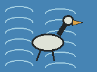
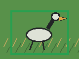
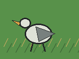

Waterbirds Shortcut Proxy
This synthetic fallback mirrors the Waterbirds failure mode: a classifier can learn habitat background instead of bird evidence when training labels and habitats are strongly correlated.
Build Metadata
- Git SHA:
0527126 - Built at: 2026-04-22 10:50:54 UTC
- Data mode: synthetic fallback
- Cache: disabled
- Manifest:
Not used
Worst-Group Metric Summary
- Habitat shortcut accuracy: 50.0%
- Bird-shape intervention accuracy: 100.0%
- Habitat shortcut worst-group accuracy: 0.0%
- Bird-shape intervention worst-group accuracy: 100.0%
| Group | Count | Habitat shortcut accuracy | Bird-shape accuracy |
|---|---|---|---|
| landbird_on_land | 2 | 100.0% | 100.0% |
| landbird_on_water | 2 | 0.0% | 100.0% |
| waterbird_on_land | 2 | 0.0% | 100.0% |
| waterbird_on_water | 2 | 100.0% | 100.0% |
Evidence and Counterfactuals





Per-Sample Results
| Sample | Label | Habitat | Habitat prediction | Habitat score | Bird-shape prediction | Bird-shape score |
|---|---|---|---|---|---|---|
| test_waterbird_water_000 | waterbird | water | waterbird | 0.160 | waterbird | 0.227 |
| test_waterbird_water_001 | waterbird | water | waterbird | 0.160 | waterbird | 0.227 |
| test_landbird_land_000 | landbird | land | landbird | -0.245 | landbird | -0.009 |
| test_landbird_land_001 | landbird | land | landbird | -0.245 | landbird | -0.009 |
| test_waterbird_land_000 | waterbird | land | landbird | -0.253 | waterbird | 0.038 |
| test_waterbird_land_001 | waterbird | land | landbird | -0.253 | waterbird | 0.038 |
| test_landbird_water_000 | landbird | water | waterbird | 0.155 | landbird | -0.184 |
| test_landbird_water_001 | landbird | water | waterbird | 0.155 | landbird | -0.184 |
Lesson
Overall accuracy hides the shortcut. Worst-group accuracy and habitat-swap counterfactuals make the failure legible: the baseline is right on common groups and wrong on crossed groups. This fallback remains in place so the suite still runs when the real Waterbirds manifest is not prepared locally.